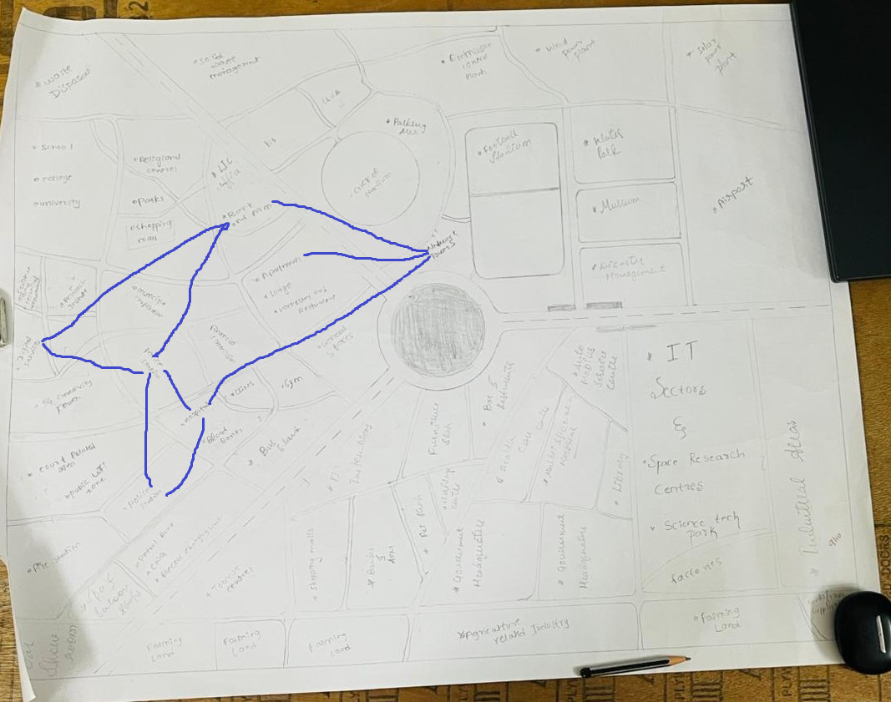

Why Kruskal Algorithm
Kruskal's Algorithm is used in telecommunications to connect all points (like towers or buildings) with the least cost,
ensuring an efficient and cost-effective network by selecting the best possible connections . The code can be viewed here
KRUSKKALS CODE.The code can be implemented by Union-Find data structure.
The efficiency of code is O(|E|log|E|) and this algorithm falls under Greedy Technique.
Network Connections
| Nodes |
Edges |
Cost |
| Tower |
Apartments |
5 |
| Tower |
Bank and ATM |
8 |
| Bank and ATM |
Police Station |
9 |
| Police Station |
Fire Station |
6 |
| Fire Station |
Hospital |
11 |
| Police Station |
Hospital |
16 |
| Bank and ATM |
Digital Services |
30 |
| Police Station |
Digital Services |
10 |
| Tower |
Hospital |
20 |

